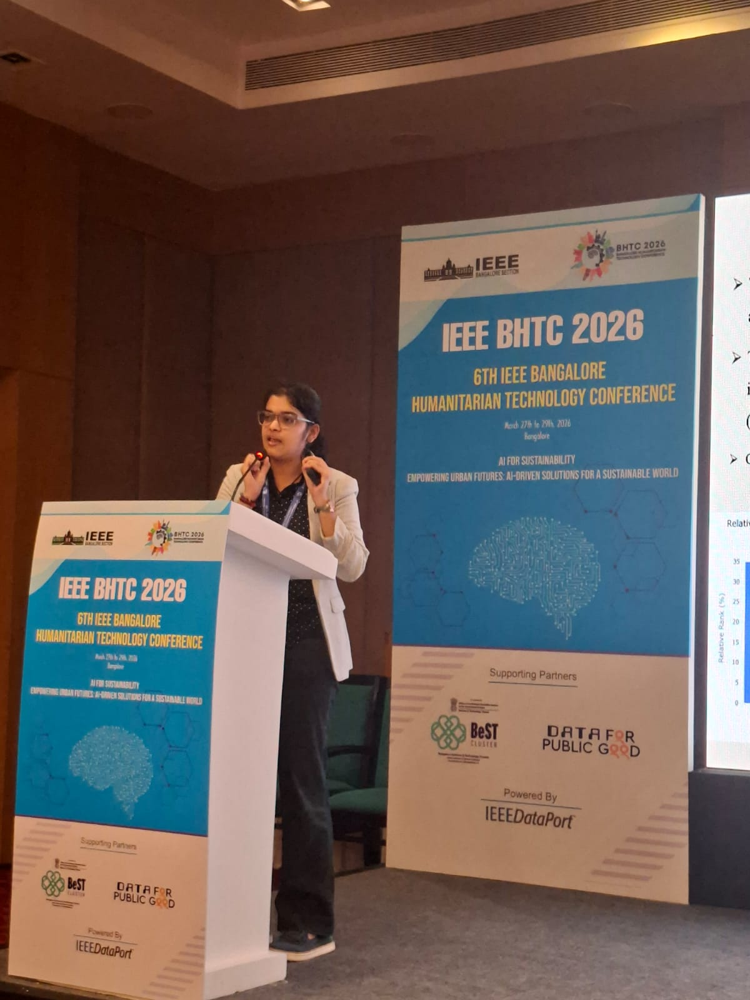
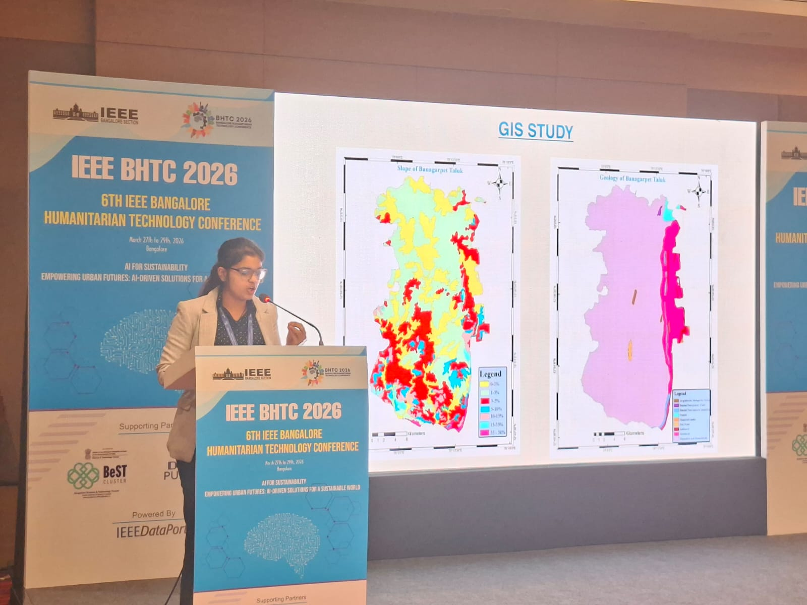
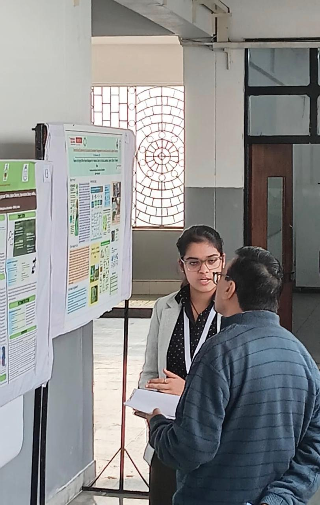

Groundwater mapping in Bangarpet
Bangarpet is a drought-prone, semi-arid town near Bengaluru where farming and households depend almost entirely on groundwater. Under the guidance of Dr. Praveena, Project Associate at KSCST Karnataka State Council for Science & Technology, I combined field data with GIS spatial analysis to map seasonal groundwater changes and identify places where recharge could be most viable.
How I approached it
I worked across a 541.31 km² study area, using static water levels from 10 sampling locations during the 2024 pre- and post-monsoon periods. Before the monsoon, water depth ranged from 5.74 to 77.6 mbgl. The northwest had severe depletion; after the monsoon, a deep pocket of 70 to 85 mbgl still persisted there.
Some sites recovered by 6 to 7 m, but the central region declined by 10 to 25 m despite the monsoon. That contrast pointed to over-extraction outpacing recharge in some places.
Building the recharge model
In ArcGIS, I built a groundwater recharge-potential index using a weighted linear combination of eight thematic layers. Slope, geology, and geomorphology each carried 21% of the weight; lineament density carried 11%; and land use, soil texture, depth to water level, and drainage density carried 6 to 7% each. Gentle slopes from 0 to 1° ranked highest for recharge suitability.
The maps pinpointed high-priority recharge zones that can support decisions about tank rejuvenation, desilting, artificial recharge structures, and expanded groundwater monitoring.
Sharing the maps
I presented this GIS work at IEEE BHTC 2026 and at a water-summit presentation. Explaining the maps to different audiences was another way to test whether the analysis was readable beyond the software screen.
 Presenting the groundwater-mapping work at IEEE BHTC 2026. |  The mapped results shown during the IEEE presentation. |
 At a Water Summit 2026 presentation. |  Discussing the GIS work beside a poster display. |